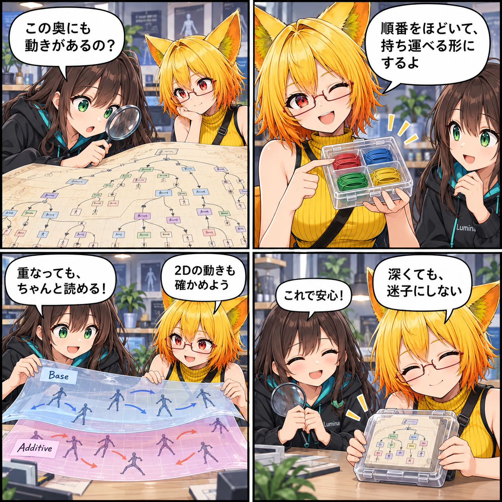

深いグラフも、重なる動きも。AV3変換を確かめた日
アバターの動きは、見た目よりずっと深く重なります。VRASではAV3のRuntime GraphをVABへ持ち運び、深いBlendTreeや重なる骨モーションを扱うための変換・再生の土台を広げました。

複雑な動きを、実行できる形へ
VRChat Avatar 3.0（AV3）のアバターには、Playable Layer、State、Transition、Expression Menu、BlendTreeといった動きの構造があります。今回の変更では、それらを任意の振る舞いとしてではなく、許可リスト型のRuntime GraphとしてVABへ取り込み、再生側で扱う土台を拡張しました。
変換側ではVRChatのAvatar Descriptorから、使うパラメータとPlayable Layerを集め、Animator LayerとState、モーション、Expression MenuをGraphへ組み立てます。実行側ではパラメータ、状態機械、モーション解決を分け、アバターの動きに必要な情報を読み取れるようにしています。
深いBlendTreeを、フラットな保存形式へ
BlendTreeやExpression Menuは、構造が深くなることがあります。一方でUnityのJsonUtilityは深い合成を扱いにくい性質があります。そこで、再帰的なRuntime Graphをそのまま入れ子で保存するのではなく、モーションやメニューをIDで参照するフラットなwire modelへ符号化・復号する処理を追加しました。
今回のエンコード処理には深さ16の上限があります。無制限のGraphを受け入れるという意味ではなく、扱う範囲を明確にしながら、深い構造が変換中に崩れないようにするための境界です。
BaseとAdditive、2Dの動きも確認する
骨モーションには、基礎となる動きへ別の動きを重ねるケースがあります。今回、BaseとAdditiveの骨モーションを統合する扱いを進めました。また、2D BlendTreeの変換と、深いRuntime Graphを含むVAB4.7変換を対象にした回帰テストコードを追加しています。
ここで扱っているのは、期間内のコミット済みコードで確認できた変換・互換性の範囲です。日記制作中にUnityの実行、VR実機、実際のVRChatでの動作確認、性能計測は行っていません。全AV3機能の完全互換や、無制限の深さを保証するものでもありません。
ほかにも進んだこと
同じ期間には、NDMF前処理とAV3互換診断の追加、PhysBone連携の競合修正、VAB自動LODとVAC拡張、VAS RuntimeとAuthoringの改訂も入りました。この記事では、もっとも多くの変更が集中し、アバターの動きを持ち運ぶ基盤として伝えやすいAV3 Runtime Graph互換性を主題にしています。
4コマの裏話
今回は、ルミナが虫眼鏡で深い「動きの地図」をのぞき込むところから始めました。ろひが糸を整理箱へ収める比喩で保存形式を示し、BaseとAdditiveのシートを重ねて2Dの確認へつなげます。最後に虫眼鏡をしまうのは、構造を見失わずに扱うという小さな安心の演出です。会話と小物は説明のための創作で、実際の操作画面や実行記録ではありません。
まとめ
アバターの複雑な動きをVABへ持ち運ぶには、Graphを読み取り、保存し、再生側で解釈する一続きの仕組みが必要です。深いBlendTreeをフラットな保存形式へ変換する道筋と、重なる骨モーション・2D BlendTreeの回帰検証を整え、AV3互換性の土台を一歩広げました。
本日のひとこと
深い構造ほど、迷子にならない道しるべを。